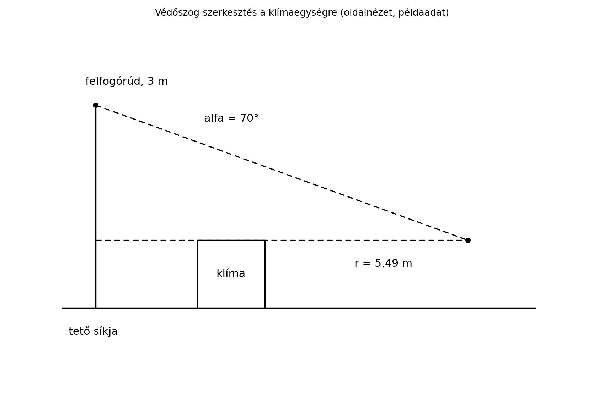
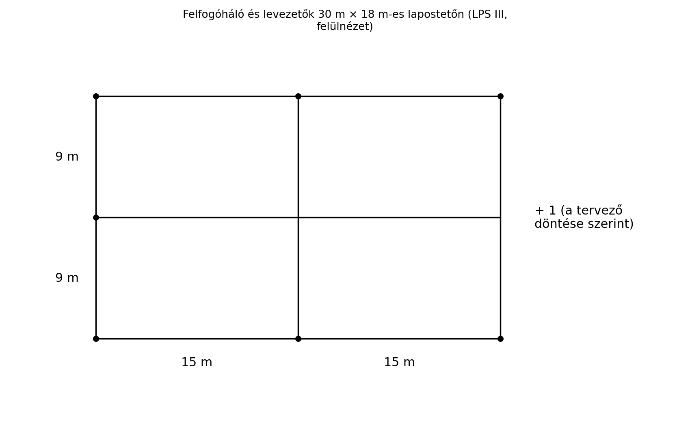

Egy heves nyári zivatar után a szerelőt gyakran hívják olyan épülethez, ahol a tetőn látható villámvédelmi felfogó megvan, de a levezető szakadtan lóg, vagy a mérőcsatlakozó hiányzik. Ilyenkor nehéz megmondani, hogy a villámáram valóban a földbe jut-e, vagy éppen a belső villamos berendezésen keresztül keres magának utat. A külső villámvédelmi rendszer akkor jó, ha a felfogótól a földelőig minden elem összefüggő, korróziómentes, és a belső villámvédelemmel is össze van kapcsolva. Ebben az alfejezetben azt tanulod meg, hogyan épül fel a külső rendszer, milyen szerepe van a gömbmódszernek, mire való a mérőcsatlakozó, és miért nem szabad elhagyni a belső villámvédelmi potenciálkiegyenlítést.
A villámvédelmi rendszer (LPS, Lightning Protection System) osztálya (LPS I–IV) a A villám és hatásai, kockázat és védelmi osztályok alfejezetben megismert védelmi szinthez (LPL I–IV) tartozik: LPL I → LPS I, …, LPL IV → LPS IV (ellenőrizendő: MSZ EN 62305-3).
A villámvédelmi rendszer láncszemekből áll: a felfogó rendszer fogadja a villámot, a levezetők eljuttatják a földelőbe, a belső villámvédelem pedig megakadályozza, hogy a hatalmas áram a belső villamos hálózatra vagy fém csövekre „átugorjon”. A belső villámvédelem nem a lánc következő tagja – az áram nem a földelőből folyik tovább a belső hálózatba –, hanem oldalról csatlakozik a földelőhöz és az egyenpotenciálra hozáshoz, így a villámáram okozta feszültségemelkedés a belső hálózaton is együtt jelenik meg, nem szikraként vagy átütésként. A mérőcsatlakozó olyan bontható pont a levezető és a földelő között, ahol a földelőrendszer ellenállása külön mérhető. Hogy ez egy valódi épületen hogyan néz ki, azt az alfejezet végén a Mintaház teljes villámvédelmi terve (a Mintaház villámvédelmi terve (feladatgyűjtemény, 23.2)) mutatja egy lapon; érdemes az egyes elemek tárgyalása közben arra is visszalapozni.
Definíció. A külső villámvédelmi rendszer (external lightning protection system) az épületet érő villámcsapás áramát felfogó, levezető és földelő rendszer együttese. Feladata, hogy a villámáramot az épület szerkezetétől és a benne lévő villamos berendezésektől elkülönített, jól ellenőrzött úton a földbe vezesse.
Definíció. A belső villámvédelmi rendszer (internal lightning protection system) mindazon intézkedések összessége, amelyek megakadályozzák, hogy a villámáram vagy annak mágneses tere veszélyes feszültséget, szikrázást okozzon az épület belsejében. Elemei a villámvédelmi potenciálkiegyenlítés, a védőtávolságok betartása, az árnyékolás és a túlfeszültség-védelmi eszközök (SPD).
A külső rendszer három fő eleme:
A felfogó rendszer feladata, hogy a villámcsapást magára vonzza, és a becsapás pontját az épület kritikus részeitől távol jelölje ki. Felfogó elem lehet:
A felfogó elemeket tartók rögzítik úgy, hogy a tetőhéjazatot és a szigetelést ne bontsák meg. Az alábbi ábra (a) részén egy nyeregtetős ház homlokzati nézete látható: az 1 gerincvezető a 2 gerinctartókon fut, a 3 tetőfelületi vezetéktartók vezetik le az ereszig, a kémény mellé a 4 felfogórúd kerül (a gerincvezető a kéményt megkerüli), az 5 fém ereszcsatorna be van kötve, és innen indul a 6 levezető. A (b) lapostetőn a 7 felfogórúd a 8 betontalpon áll, a vezetőt a 9 betontalpas vezetéktartók hordozzák, a vezetőket a 10 összekötő kapcsolja, a 11 fém attikafedés bekötve természetes felfogóként szolgál, és a 12 levezető a homlokzaton halad le.
A betontalpas tartók azért terjedtek el, mert a lapostető vízszigetelését nem kell átfúrni. Hogy hová kell felfogó, azt nem az ábra, hanem a következő pontban tárgyalt gömbmódszer (vagy védőszög) dönti el; a tartók osztását a gyártó adja meg (ellenőrizendő). A HTML-kiadásban a részekre mutatva megjelenik a nevük és a szerepük.
A tervezés során azt kell meghatározni, hogy egy adott felfogó elrendezés mekkora teret véd. Erre szolgál többek között a gömbmódszer (rolling sphere method).
Szabály. A gömbmódszer szerint képzeljünk el egy meghatározott sugarú gömböt, amelyet az épület és a felfogórendszer körül gördítünk. Az a térrész védett, amelyhez a gömb nem ér hozzá. A gömb sugara a villámvédelmi osztálytól függ: LPS I esetén jellemzően , LPS II esetén , LPS III esetén , LPS IV esetén . (ellenőrizendő: az MSZ EN 62305-3 aktuális táblázatai)
Gyakorlati példaként: ha egy lapostetőt LPS III osztály szerint védünk, akkor egy sugarú gömbbel gondolatban körbegördítjük a tetőt. Ha a gömb a tetőfelület valamely pontján hozzáér, akkor oda felfogó rudat vagy vezetéket kell tennünk. Minél alacsonyabb a felfogó, annál sűrűbben kell elhelyezni, mert a gömb „beesik” a védettnek hitt részekre.
Az ábrán a szaggatott körök a gördülő gömb három helyzetét mutatják: a talajon és a bal oldali felfogón, a két felfogó csúcsán, valamint a jobb oldali felfogón és a talajon. A sraffozott terület az, amelyhez a gömb sehol nem ér hozzá: ez a védett tér. Két, távolságú felfogó között a gömb mélységig ereszkedik be; LPS III-nál ( m) és m-nél m, ezért az 1 m-es felfogók a tetőt védik. Kisebb gömbsugárnál (LPS I: m) vagy alacsonyabb felfogónál a gömb elérheti a tetőt. A HTML-kiadásban az osztály, a felfogók távolsága és magassága, valamint a gömb helyzete állítható.
A magyarországi gyakorlatban a védőszög-módszer is elterjedt, különösen függőleges felfogó rudak esetén. A védőszög azonban csak bizonyos magasságokig használható; a pontos határokat a szabvány adja meg. (ellenőrizendő: a szabvány szerinti védőszög-határok)
A villanyszerelő leggyakrabban tetőre szerelt berendezést véd: klíma kültéri egységét, napelemet, antennát, kéményt. Ehhez a gömb mellett a másik két szerkesztési módot is ismerni kell.
Szabály (védőszög). A felfogórúd csúcsából induló, félnyílásszögű kúp alatti tér a védett tér. Az a rúdnak a vizsgált vonatkoztatási sík feletti magasságától és az LPS-osztálytól függ: a szabvány görbéjéről kell leolvasni, és a magassággal csökken. A módszer csak a görbén szereplő legnagyobb magasságig használható: LPS I: 20 m, II: 30 m, III: 45 m, IV: 60 m (ellenőrizendő: MSZ EN 62305-3). A védett kör sugara a vizsgált síkban:
Szabály (háló). Lapostetőn a felfogóháló osztása legfeljebb LPS I: 5 m × 5 m, II: 10 m × 10 m, III: 15 m × 15 m, IV: 20 m × 20 m (ellenőrizendő: MSZ EN 62305-3). A tetőszéleken mindig fut vezető; a tetőből kiálló fémrészeket be kell kötni, vagy felfogórúddal kell védeni (a háló síkja a kiálló tárgyat nem védi).


A levezetők feladata, hogy a felfogó rendszerből a földelőbe minél rövidebb, függőleges utat biztosítsanak a villámáramnak. A levezetők anyaga lehet réz, alumínium vagy horganyzott acél, és a rögzítésük nem szakíthatja meg az áram útját.
Szabály. A levezetőket úgy kell elhelyezni, hogy minden villámcsapás-ponttól több lefelé vezető út álljon rendelkezésre. A levezetők jellemző távolsága osztálytól függ: LPS I–II: , LPS III: , LPS IV: ; legalább két levezető kell (ellenőrizendő: MSZ EN 62305-3).
A levezetőben folyó villámáram erős, gyorsan változó mágneses teret hoz létre. Ha a levezető közelében vezető hurkok, fém csövek, villamos vezetékek vannak, akkor bennük feszültség indukálódik, és átütés keletkezhet. Ezért kell betartani a szétválasztási távolságot (separation distance).
Összefüggés. A szétválasztási távolság közelítő számítása:
ahol:
Anyagok és jellemző minimális méretek (tanulási érték, ellenőrizendő: MSZ EN 62305-3 6. és 7. táblázata, gyártói katalógus):
| Anyag | Felfogó és levezető | Földelő | Megjegyzés |
|---|---|---|---|
| réz | 50 mm² (Ø 8 mm tömör) | 50 mm² (Ø 8 mm vagy szalag) | bimetál kötés alumíniumhoz, horganyhoz |
| alumínium | 70 mm² (Ø 10 mm) | nem alkalmazható | földbe nem fektethető, betonba nem kerülhet |
| tűzihorganyzott acél | 50 mm² (Ø 8 mm) | 78 mm² (Ø 10 mm) vagy legalább 90 mm² szalag (pl. 30 × 3,5 mm) | a talaj–levegő határon korrózióvédelem kell |
| rozsdamentes acél | 50 mm² (Ø 8 mm) | 78–100 mm² | kilépési pontokra jól bevált |
Betonból a talajba vagy a szabadba kilépő horganyzott acél a talaj–levegő határon gyorsan korrodál: ott rozsdamentes acél vagy korrózióvédő szalag kell (a lenti levezető- és mérőcsatlakozó-ábra 4-es eleme).
A mérőcsatlakozót mérés után vissza kell zárni és meghúzni: egy nyitva felejtett mérőpont a levezetőt leválasztja a földelőről. A HTML-kiadásban a részekre mutatva megjelenik a feladatuk.
A földelő rendszer a villámáramot a talajba osztja el. A gyakorlatban két fő típust használunk:
Szabály. A földelőrendszernek kis ellenállással kell kapcsolódnia a talajhoz. A gyakorlatban a villámvédelmi földelő ellenállására gyakran alatti értéket írnak elő, de a követelmény a talaj fajlagos ellenállásától és a védelmi osztálytól is függ. (ellenőrizendő: a szabvány és a tervezői előírás)
A gyűrűföldelőt jellemzően az alap körül, legalább mélyen, az alaptól nagyjából távolságra helyezik el. A pontos méreteket a szabvány és a talajviszonyok határozzák meg. (ellenőrizendő: aktuális előírás)
A külső rendszer csak akkor védi az épületet teljesen, ha a belső villámvédelemmel együtt működik. Ennek legfontosabb eleme a villámvédelmi potenciálkiegyenlítés.
Definíció. A villámvédelmi egyenpotenciálra hozás (lightning equipotential bonding) a külső villámvédelmi levezetők, a földelőrendszer, az épület belső EPH-ja, a fém csővezetékek, a fém szerkezetek, az árnyékolások és a túlfeszültség-védelmi eszközök összekötése egy közös potenciálra.
Villámcsapáskor a földelőrendszer és a levezetők feszültsége rövid időre nagyon megemelkedik. Ha a belső EPH is ugyanerre a potenciálra kerül, akkor az épületben minden fém elem és a védővezető együtt emelkedik, így nem alakul ki köztük veszélyes feszültségkülönbség. A belső villámvédelem másik fontos eleme a túlfeszültség-védelmi eszközök (SPD) beépítése. Az SPD-k a betápláló és informatikai vezetékeken korlátozzák a túlfeszültséget, és az itt kiépített földelőhöz csatlakoznak.
Szabvány. Az MSZ EN 62305 sorozat (különösen az MSZ EN 62305-3) a külső villámvédelmi rendszer felépítésére, a felfogó rendszer méretezésére, a levezetők és földelők kialakítására, valamint a szétválasztási távolságra ad követelményeket. Az MSZ EN 62305-4 a belső rendszerre vonatkozó villámvédelmi intézkedéseket tárgyalja. A felfogó rendszert gömbmódszerrel, védőszöggel vagy hálómódszerrel lehet méretezni, a védelmi osztálytól függő paraméterekkel. A levezetőket és földelőket úgy kell kialakítani, hogy a villámáramnak több párhuzamos útja legyen, és a földelési ellenállás a talajviszonyokhoz igazodjon. A belső villámvédelem része a potenciálkiegyenlítés, a védőtávolságok és a túlfeszültség-védelmi eszközök. (ellenőrizendő: a szabvány aktuális kiadása és a gyártói szerelési utasítások)
Az alábbi ábra az 1., 3., 2. és 5. hibát párosítja a helyes megoldással (oszloponként, felül a helyes, alul a hibás): 1 enyhe ív és sűrű tartó – éles törés; 2 bimetál kötőelem – közvetlen réz–alumínium érintkezés; 3 bontható mérőcsatlakozó – oldhatatlan kötés; 4 a szétválasztási távolság betartva (vagy összekötés) – túl közel, összekötés nélkül.
Szemrevételezéskor ezt a négy pontot érdemes végigjárni a levezetők mentén; a hibás változatok közül a 3. a mérést, a többi a villámáram útját veszélyezteti. A HTML-kiadásban a párok egyenként, magyarázattal jeleníthetők meg.
Gyakorlás: ennek az alfejezetnek a kidolgozott példái, gyakorlatai és megoldással ellátott feladatai az Összefoglaló feladatgyűjtemény villanyszerelő tanulóknak című kötet 23.2 szakaszában találhatók.
A külső villámvédelmi rendszer felfogó, levezető és földelő rendszerből áll. A felfogó rendszer lehet rúd, vezeték, háló vagy természetes felfogó; méretezésére a gömbmódszer, a védőszög vagy a hálómódszer használható. A gördülő gömb sugara a védelmi osztálytól függ: LPS I esetén jellemzően , LPS III esetén (ellenőrizendő: szabványérték). A levezetők a villámáramot a földelőbe vezetik; a mérőcsatlakozó bontható pont a földelési ellenállás méréséhez. A szétválasztási távolságot a
összefüggés adja, és azt fejezi ki, hogy a levezetőtől milyen távolságban lehet fém idegen elem, amelyet nem kötünk a levezetőhöz. A földelő lehet gyűrűföldelő vagy alapföldelő, és kis ellenállással kell a talajhoz kapcsolódnia. A belső villámvédelem legfontosabb eleme a villámvédelmi potenciálkiegyenlítés, amely a levezetőket, a földelőt és a belső EPH-t összeköti. Ezt a kapcsolatot használjuk a továbbiakban a túlfeszültség-védelmi eszközök bekötésénél.
Továbbvitt eredmény. A külső villámvédelmi rendszer felfogó, levezető és földelő elemei, valamint a belső potenciálkiegyenlítés az alapját adják a túlfeszültség-védelmi eszközök (SPD) helyes beépítésének; ezt a Túlfeszültség-védelmi eszközök (SPD): típusok és beépítés alfejezetben használjuk fel.
A fejezet a magyarországi és európai villámvédelmi szabályozást követi, elsősorban az MSZ EN 62305 sorozat felépítését. Az alfejezetben szereplő számszerű értékek – gördülő gömb sugarai, levezetőtávolságok, szétválasztási tényezők, minimális anyagkeresztmetszetek, földelési ellenállás határértékek – tanulási példák, amelyeket a kiadás előtt az aktuális szabványszöveggel és a gyártói szerelési utasításokkal kell egyeztetni. Az MSZT és a DEHN honlapja kiindulópont, ebben az alfejezetben nem ellenőrzött forrásként kezelendő.